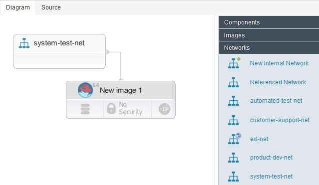
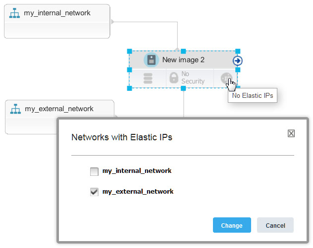

Attaching resources to existing networks
Existing internal and external networks are included in the blueprint designer palette. You can attach new resources, such as virtual images, to those network resources.
Before you begin
About this task
- In the blueprint designer, create one or more virtual image resources in a blueprint.
- From the Networks drawer of the palette, drag a network to the blueprint.
- Drag the virtual images to the network, or drag a connector from the images to the network. The
images are linked to the network; when you provision an environment from the blueprint, the new
virtual images are attached to the network. The following image shows a simple virtual image that is
connected to a network.

- If the network has more than one subnet, from the Choose subnet window,
select an available subnet. Note: If you are using Amazon Web Services, the subnet you select must be configured in the availability zone that you are using.
- Add virtual images to the blueprint.
- Add the internal network to the blueprint.
- Connect the virtual images to the internal network.
- At the lower right of an image, click No Elastic IPs
 . The lower right of the image changes to show that it has an elastic IP . Also, the source code for the blueprint includes a parameter that represents the external
network, as shown in the following blueprint
code:
. The lower right of the image changes to show that it has an elastic IP . Also, the source code for the blueprint includes a parameter that represents the external
network, as shown in the following blueprint
code:
At provisioning time, the blueprint designer prompts you for the name of this external network.public_network_id: type: string description: Generated for floating IP default: 'TODO' - To set the default network that represents this external network (that is, the network that
provides elastic IP addresses), follow these steps:
- Add the external network from the palette to the blueprint. Like the other existing networks,
the external network is not displayed as a resource but as a reference in the blueprint code, as in
the following example:
## REFERENCE {"d5238086-cab5-4b4f-b0b6-1234bac9ef28":{"type": "OS::Neutron::Net", "properties": {"name": "my_external_network", "network_id": "d5238086-cab5-4b4f-b0b6-1234bac9ef28"}}} - From the reference, copy the network ID to the parameter that represents the external network.
For example, if you use the network in the previous code, the parameter looks like this
code:
When you provision environments from this blueprint, this network is the default source of floating IP addresses.public_network_id: type: string description: Generated for floating IP default: 'd5238086-cab5-4b4f-b0b6-1234bac9ef28'
- Add the external network from the palette to the blueprint. Like the other existing networks,
the external network is not displayed as a resource but as a reference in the blueprint code, as in
the following example:
SoftLayer® networks are modeled slightly
differently. To connect a virtual image to an external network on a SoftLayer cloud, you must connect the image to both the internal and external
networks. Then, you click No Elastic IPs
and select the network from which the image gets an IP address, as shown in the following
figure.
